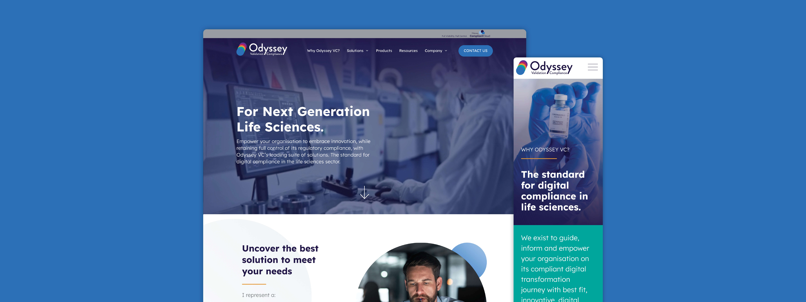
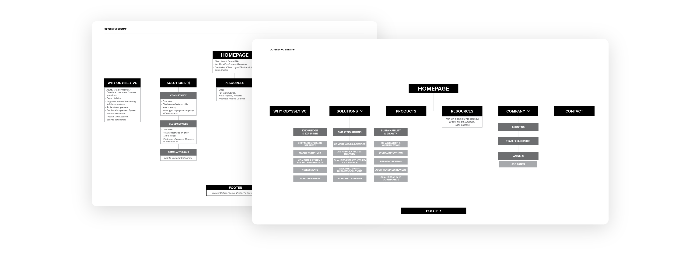
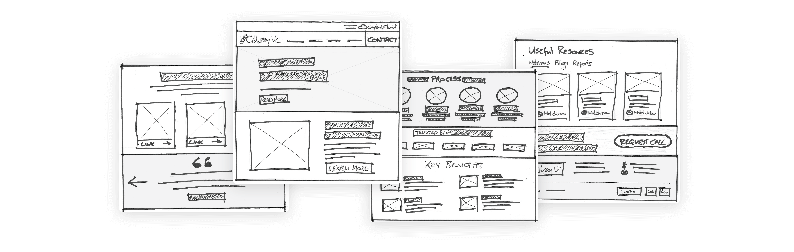
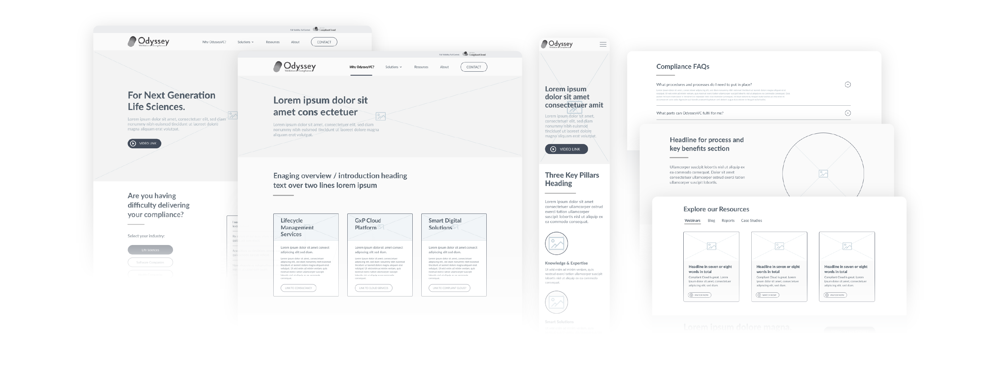
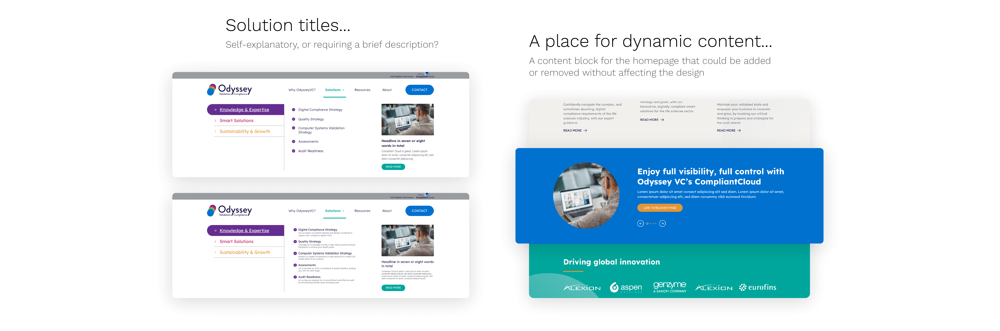
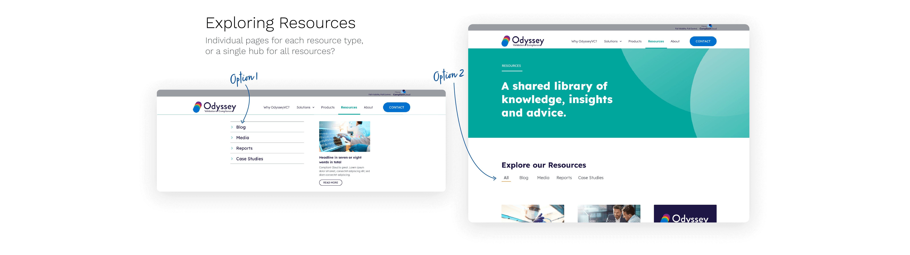
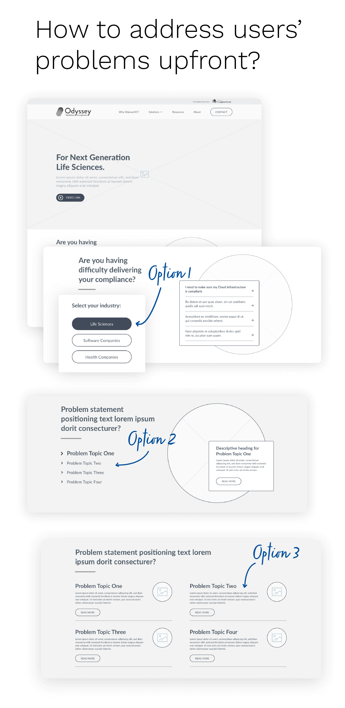
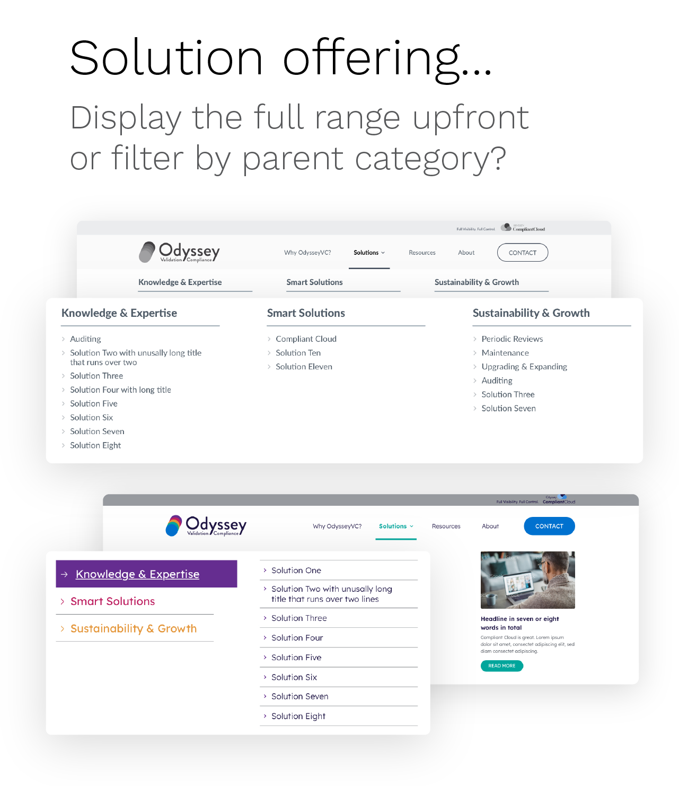
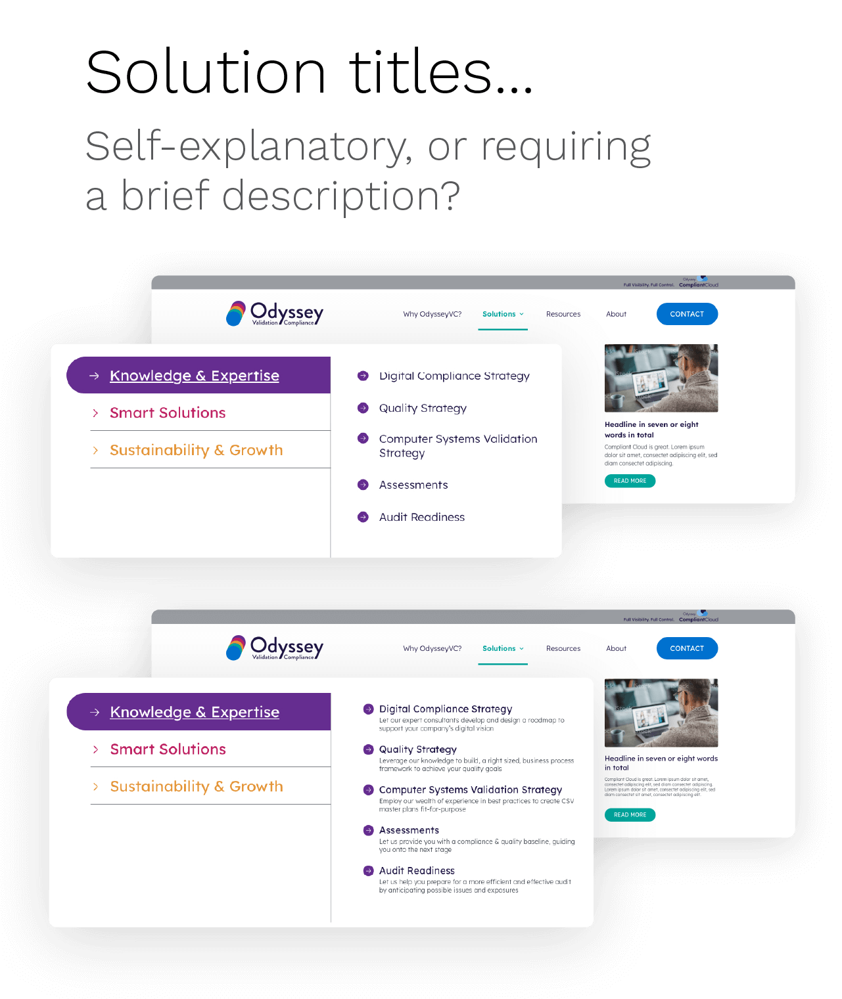
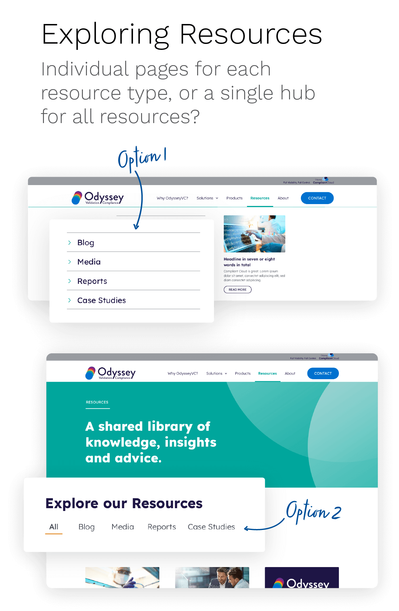

UX DESIGN CASE STUDY
OdysseyVC
INTRODUCTION
Life Science companies operate in a highly regulated environment. Compliance is critical to what they do, but understanding where to even start can be too overwhelming for some. That’s where OdysseyVC come in.
As Digital Transformation experts and Validation Consultants for global Life Science companies, they had just gone through a brand development process with TOTEM and needed a new website to position themselves as the leaders in what they do – best in class.
PROJECT OVERVIEW
Engage, inform and drive conversion...
I was tasked with designing a website that would position OdysseyVC as a leader in their market and would engage, inform and ultimately drive conversion. In doing this, we needed to balance their customers’ desire for a creative, innovative and transformative solution but in a safe pair of hands.
Given the high level of clients that OdysseyVC were now positioning themselves in front of, they were eager to get the new website live as soon as possible. The leap from the old website to the new website was a big one, and it would have been great to conduct Usability Testing at points during the process to validate the design as it was evolving. Unfortunately, time constraints didn't allow for it and OdysseyVC chose instead to go live first and revisit at a later date.
THE EXISTING WEBSITE
A closer look at OdysseyVC
Before I could really get stuck into the research process, I first needed to take a close look at OdysseyVC’s existing website to gauge what the site was doing well and what could be improved for the redesign. It was clear that the site was dated in style and unfit for purpose. It lacked clarity about their Value Proposition, and wasn’t communicating clearly who they were, why they were different from the rest and what exactly they offered.


It became clear that at a minimum, the redesign needed to address:
Site Structure
Key Messaging & Call to Actions
How to present what they do and the solutions they offer
COMPETITIVE BENCHMARKING
What are competitors doing well?
Now that I had a better understanding of the current website, I wanted to understand the landscape that OdysseyVC resided in. I examined websites of competitors identified by OdysseyVC, or the websites of peers discovered via Google searches for terms related to cloud, compliance and consultancy. Understanding market trends provided insights that helped answer some initial questions about users’ existing mental models, conventions and best practice.
Out of this, a set of findings and recommendations were produced that:
Would inform considerations about the structure of the site
Would inform considerations about how the style, presentation and flow of content on key pages should be crafted


STAKEHOLDER INTERVIEWS
Understanding their understanding
Conducting in-depth discussions with the OdysseyVC team gave me a clearer picture of the business and their goals, and afforded me the opportunity to question elements of their existing method of describing who they are and what they offer. We uncovered the idea of there being a “Validation journey” that all of their customers are on – some starting off, some more advanced – and that OdysseyVC offered solutions to all of those Customers, no matter where they were on that journey.
This provided ideas about:
How to present their Solution offering within the site structure
How to categorise solutions for different audiences
USER INTERVIEWS, USER PERSONAS & EMPATHY MAPS
What do their users want?
Coming into the project, OdysseyVC had conducted their own market and customer research. We were able to draw from that research to identify who were the key users of the website, why they would be coming to the website and what they needed from the website. Analysing the trends in the feedback, I learned that users were saying:
With this as a basis, a series of User Personas were produced that helped define the audience and provided a clear design target, allowing us to prioritise the primary use cases and their goals.


Over the course of a workshop, we collaboratively drilled into who those primary users were, and created an Empathy Map for each. Each empathy map aimed to highlight what that user would want to know, what benefit they should know about, what confuses them and what pain points currently exist for them.
Benefits of this exercise:
It helped me to empathise more with who we were designing for
It was hugely important in defining what kind of a solution I needed to design


CUSTOMER JOURNEY MAPS
Getting top-level buy-in
At this stage, I produced some Customer Journey maps merely as a visualisation tool to illustrate how our findings from the empathy maps exercise hypothetically mapped onto the experience of visiting the existing website. As well as helping to get top-level buy-in to the direction of and need for change, this exercise also helped to break down the overall journey into smaller steps and aided discussion around existing pain points.
As stated earlier, I would have preferred if this data was actually representative of real-life Usability Test cases but unfortunately we weren't afforded the opportunity to carry out testing to get this data.


SITEMAP
Putting a shape on things
An initial sitemap was crafted as a first step to determining an agreed structure for the website. This as always is a key tool in defining how best to organise the site’s information – which in turn will determine the quality of the experience users have as they browse the site.



SKETCHES
Design concepts & early explorations
Based on what we learned from the initial research stage, I started out the design process by exploring different concepts. My high level goals were to make my designs:
Bold and confident with a natural flow
Tell a story, be easy to understand and therefore useful
I took some of the preferred ideas and incorporated them into paper sketches.


Once we were zeroing in on concepts that were beginning to feel like they fit the bill, I moved to Sketch to start creating some low-fidelity prototypes.


It was also at this stage that I began the process of formalising the design system I would use to produce the final User Interface for the website.


FEEDBACK & IMPROVEMENTS
Iterate!
To understand how users felt about the design, we did a number of rounds of in-house testing with colleagues at both TOTEM and OdysseyVC. Based on the feedback I received, I made revisions to address problem areas.
Here are some of the major areas of feedback I received:
Addressing the users' specific problem upfront
How to display the solutions offering in the navigation
What is the appropriate language to use
Allowing for dynamic "newsflash" content on the homepage
The appropriate way to structure the Resources section
In particular, at this point I felt some testing was required to validate the copy on the website. There had been a number of changes in direction for the tone of voice of the copy and how it spoke to the audience. A number of possible routes were discussed, and one was settled on without conducting some testing to validate that it added value and didn't confuse or frustrate the intended audience. Despite my advice on this, the client decided that they would press on and revisit at a later date.







DEVELOPMENT
Ready for Launch
After handing over my prototype and wireframes to the Development team, we spent several weeks working together to build and test the new website, eventually launching on December 1st, 2021.
In 2022 we will move on to work on the website for CompliantCloud, OdysseyVC's first digital product. (*EDIT* – In March 2022, I left TOTEM to take up a new role as UX Designer for Global Payments)
View how the final OdysseyVC website turned out in the video below.